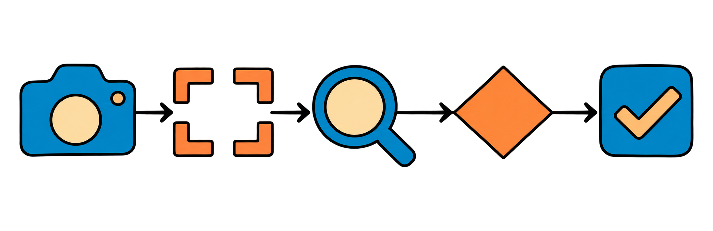
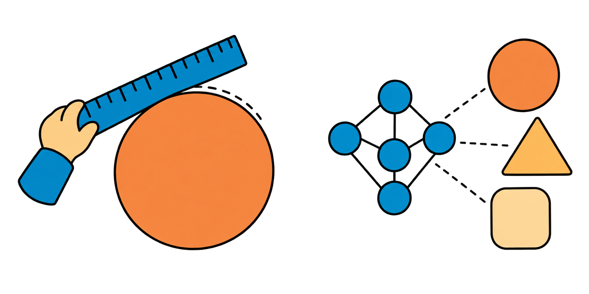
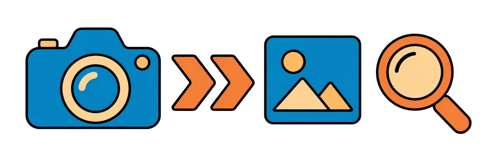
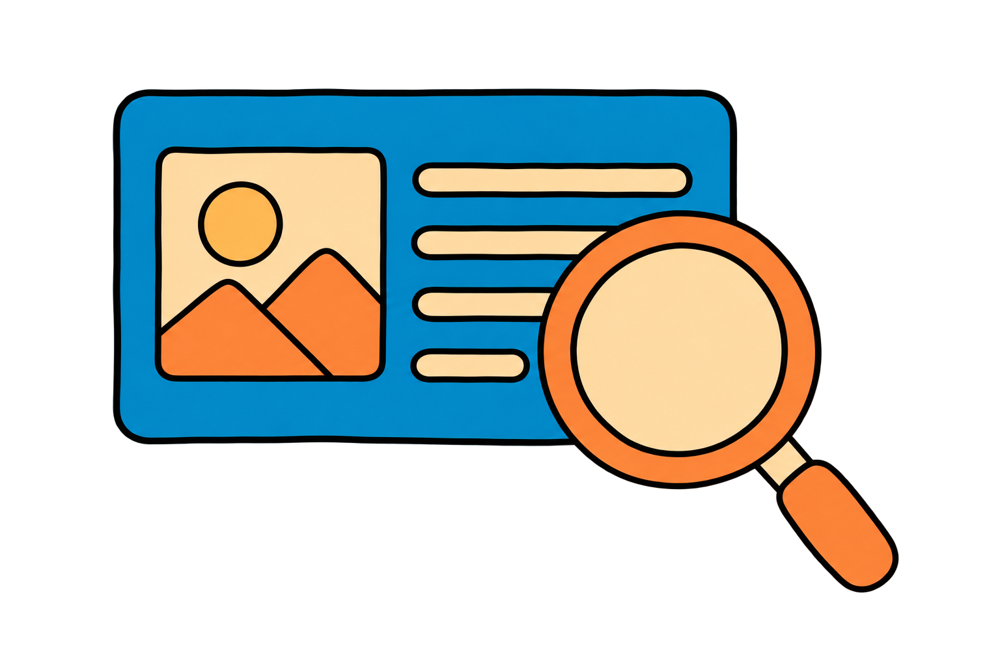
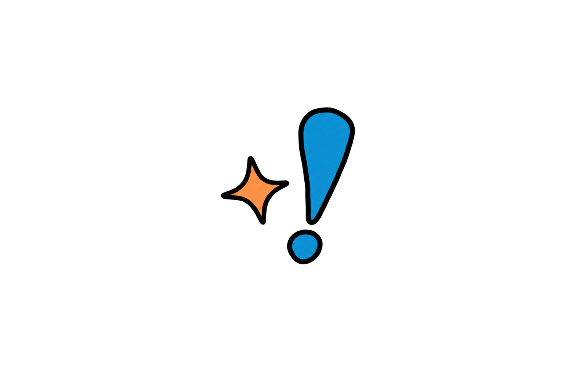
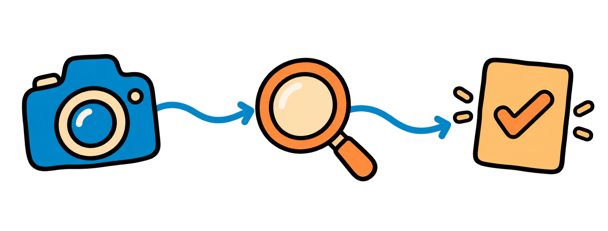

COMMAND THE
CAMERA.
Voice or text should control a clearly defined vision action. A system must validate the command before changing what it does.
One command
One safe action
One visible response
One safe action
One visible response
Voice or text should control a clearly defined vision action. A system must validate the command before changing what it does.

Natural language is ambiguous. Map only recognised commands to a small, safe action list; show a useful error for the rest.

Run the notebook and type a command such as “original”, “gray”, “edges”, or “threshold”. Invalid commands must leave the input unchanged.

The user should always see which vision mode is active and why a command was rejected.

Enter an unsupported command. The notebook should reject it, explain the allowed choices, and preserve the last valid vision mode.

A command succeeds only when the user can see the requested change and understands its limit.

Record the safe multimodal interaction you built.